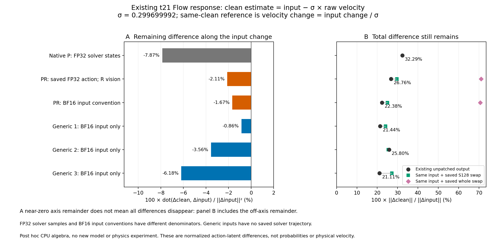
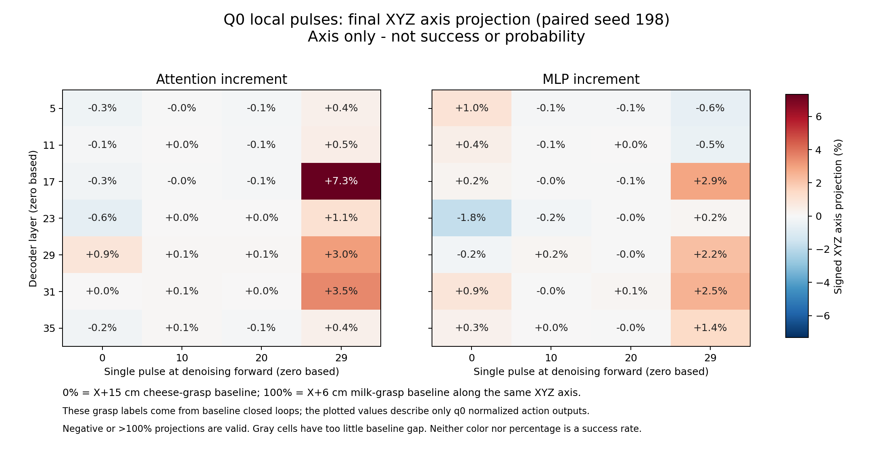
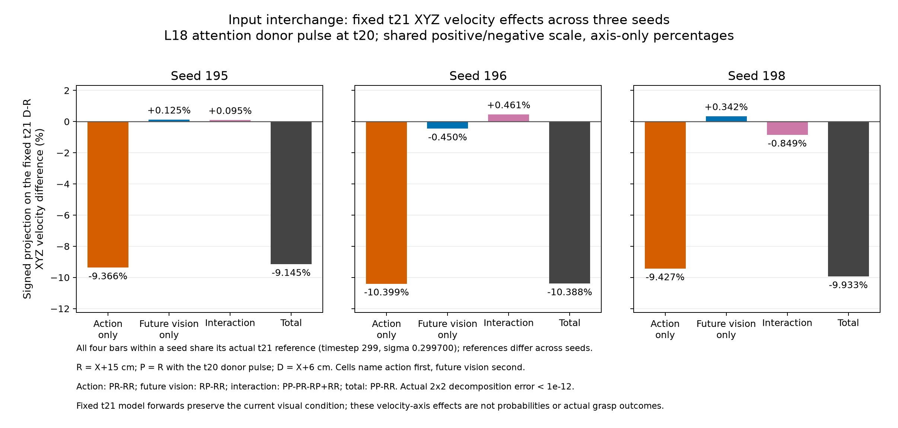
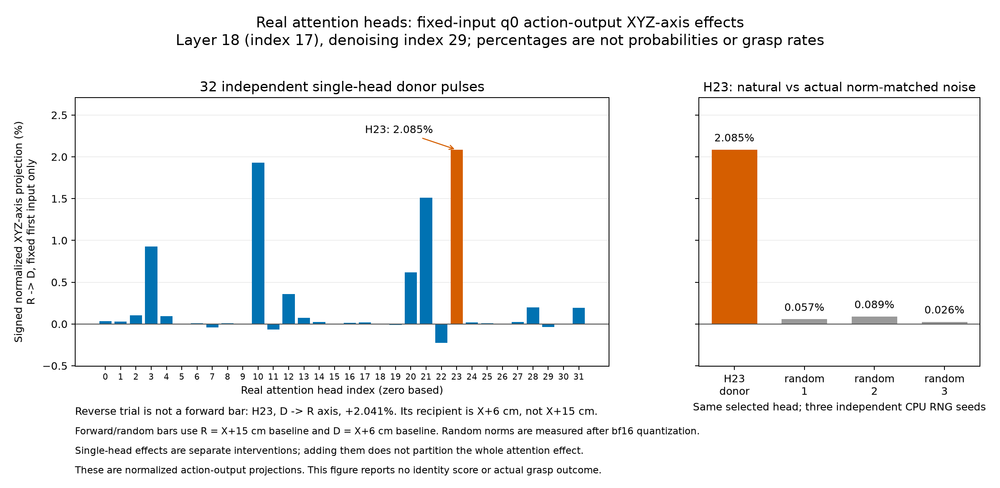
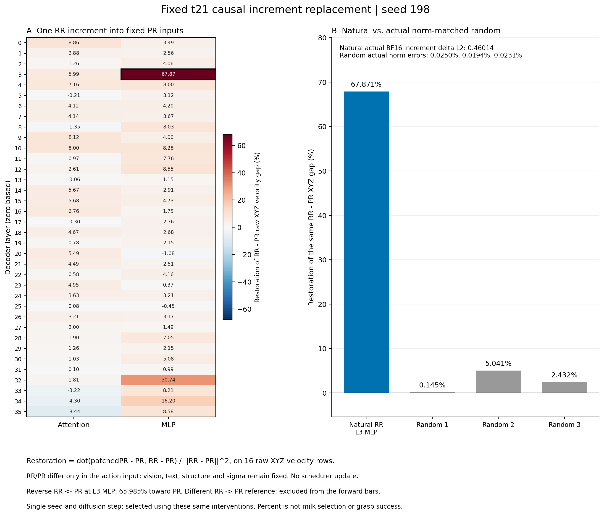
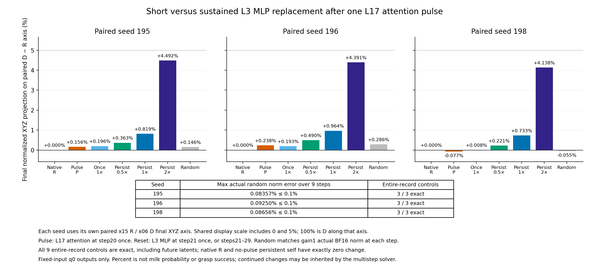

2026-10-04 · 最新内部实验 · 代码、真实数组与记录
只换未来生成的随机起点，抓取对象就变了。
只查一个问题：指令一直是“抓牛奶，放进篮子”。牛奶移动6厘米时能抓，移动15厘米后却抓奶酪盒。我们要查清网络里的哪段计算导致选错，并验证改它能否救回抓取。
最新实验：在同一个12厘米初态，拆开模型第一轮真正使用的两份随机数组：一份用来生成未来画面，一份用来生成动作。各取A、B两份，交叉成四组；之后都用同一组后续采样。
四条都是把动作交给 MuJoCo 的128步闭环执行；不是模型生成的视频。只统计抓起了谁，没有把它写成最终放篮成功。
1. 我们到底改了什么，机械臂又抓了谁？
当前照片、文字、机器人与物体初态都不改。A和B只是两份真实随机起点（seed195／198），没有告诉模型“抓奶酪”或“抓牛奶”。模型从这些数组开始，逐步生成未来画面和动作。
| 未来生成的起点 | 动作起点A | 动作起点B |
|---|---|---|
| A | 抓奶酪盒，第68～72步 | 抓奶酪盒，第70～74步 |
| B | 抓牛奶，第64～68步 | 抓牛奶，第65～69步 |
这张表支持什么？在这一个初态、这两份起点里，未来生成一路会影响最初动作，并影响后续实际抓取。它不是单凭照片就稳定选中牛奶。还不能说它记住了训练答案，也不能说动作随机性在其他条件下一定没用。
当前：未来生成起点B、动作起点A，之后统一用A的后续采样；抓起牛奶，第64～68步连续满足抓起条件。
切换此前的实际录像
怎样确认不是输入、动作转换或抓取统计搞错？
两条原生对照先精确复现全部129份仿真状态、128步动作与8轮输入画面，再执行两条混合起点。第一轮实际返回的两份随机数组、模型收到的当前帧、时间表和动作补齐部分都核过。其后每轮重新拍各自当前画面，使用同一组种子196～202；21组后续原始噪声逐字节相等，画面会因运动不同而不同。
另一次只读复核重算了全部512步动作的还原、6D旋转到7维控制的转换与裁剪，均精确吻合。抓起要求每份记录同时有双侧指垫接触、相对初态抬高超过2厘米，连续5份记录；表格标出整个窗口，不是单帧目测。没有其他物体满足这个条件。
本批4次新首轮预测共120次网络计算，后28次预测共840次，合计960次；四条真实物理执行。A＋A、B＋B的录像和旧文件字节相同，网页复用原视频文件。
此前一步：第一轮动作与后续噪声交叉
先把抓错／抓对运行的首轮16步动作分别接上两种后续采样。四组抓取都跟随首轮来源：source195两次抓奶酪盒，source198两次抓牛奶。这才进一步拆首轮里未来生成与动作生成的两份随机数组，得到上面的新结果。首轮结束还没接触物体，不能把终局标签倒推为首轮已经选定目标。
2. 猜想哪些有依据，哪些没有过关？
| 我们的猜想 | 实际怎么试 | 目前怎么判断 |
|---|---|---|
| 某块网络把动作拉回熟悉抓法 | 拆第4层MLP，连续9次改它，再让机械臂执行 | 四条仍抓奶酪。反向更新也符合普通去噪；尚不能证明记忆机制 |
| 少数单元或门控路主导这次响应 | 只改128个内部单元；分别改两条分支 | 两项预定预测都没成立，不能叫牛奶单元 |
| 未来生成一路影响抓取选择 | 只交换两份未来／动作初始数组，四条真实执行 | 这四次支持；具体网络通路尚未定位 |
| 未来表示反过来影响当前画面的处理，或直接影响动作 | 准备分别切断这两条attention连接 | 下一项待检验猜想，没有动作结果 |
此前的真实去噪重算：为什么“回拉”不能直接叫背答案
2. 为什么那个“反方向更新”不能当成背答案？
模型收到的是还带噪声的中间动作，输出的是去噪方向。求解器再把两者结合，得到本轮对干净动作的估计。因此我们把输入推开一点后，网络反着修正，本来就可能是正常计算。
这次用保存的真实 FP32 动作状态与模型输出重算，固定原画面，只更换动作输入。沿原扰动方向，输入的改变量与去噪抵扣量几乎抵消。
现在的结论：那次“反着修正”大部分符合去噪计算，不能拿它当作熟悉动作记忆的证据。它没有证明所有变化都消失，也没有证明模型没记住训练数据。这里算的是本轮干净动作的估计，还不是最终执行动作。
展开完整数组重算图和数值边界

本项是对既有数据的CPU事后分析，新增模型计算0次、仿真0次。真实源码的padding掩码、前10个有效输出与原始XYZ逐字节核过，原始头没有被掩码操作改写。FP32状态和BF16模型输入各有自己的分母；改变未来视觉的原生P也另外保留，没有混用。
第4层内部实验：实际换过哪些数？两个预测为何被推翻？
这次究竟改了网络里的什么？
在此前短暂推过动作后的下一次计算里，固定两路相机画面、同一句话和改后的动作输入，只改第4层 MLP 中的动作行。每个动作行里有12,288个真实中间数；我们提前选定32、128、512个位置，分别换回未扰动时的值。其他位置与原来的残差保留。
选取名单根据该位置的真实系数差和 down 权重确定，在查看替换后的输出前就冻结。这份名单不是按“牛奶”标签挑的，也不能把每个单元的作用简单相加。
看一个实际数字：单元8015，第0个预测动作行
| 真实中间数 | 未扰动动作输入 | 扰动后的动作输入 |
|---|---|---|
| g | −0.267578125 | −0.267578125 |
| u | 0.0166015625 | 0.0164794921875 |
| 乘完后的 z（模型精度） | −0.00445556640625 | −0.00439453125 |
直接换数实验把右边的 z 换成左边的 z，再让后面的网络继续算。一次处理的是选中的128列×16个动作行，不是只改上面这个数。这些数没有米、牛奶概率之类的单位。单元编号从0开始；第0个动作行不代表去噪第0步，本批固定的是去噪索引21。
2. 先前的两个预测，实际过关了吗？
| 先定的预测 | 实际数字 | 结论 |
|---|---|---|
| 只改128个单元，至少承担整块作用的一半 | 整块67.9%，一半应≥33.9%；128个实际17.3% | 没有成立 |
| 门控路的作用，比另一条路更强 | 只换门控 g：5.8%；只换 u：18.0%；两路一起换：17.3% | 没有成立 |
扩大到512个位置，效果是36.9%。因此这次预选的128个不够主导一半响应；它没有证明所有可能的128个组合都无效。门控与 u 的自然改变量不同，不能把分支效果当作“语义理解能力”的比较。
展开24次真实计算的数值图

展开真实128个位置×16个动作行的变化图

改动从第4层往后，实际怎样传播？

3. 它是否只对那条动作方向有作用？
我们另外造了三个与原扰动方向近乎垂直、长度相同的动作输入，只改变 XYZ 三列。再对同一份128个位置换数。它们对这三种无关输入也产生恢复作用：5.8%、9.6%、9.9%。
这意味着：这组单元会处理不止一种动作输入变化。现有证据更支持继续查一般的动作响应，不能把这组单元命名为“选择牛奶的部位”。三个无关方向尚不能覆盖所有输入，也不能证明这块 MLP 完全不参与目标选择。
同强度随机对照、数值检查和中断记录
自然128个位置的效果是17.3%。随机选128个位置、用真实对应系数变化并匹配实际输出改变量，三次为6.7%、10.1%、7.8%；在原128个位置上改随机方向，三次为−1.6%、0.6%、1.6%。每个随机组都匹配模型实际精度下的 down 输出范数，容差0.1%，不只匹配名义输入长度。样本少，没有据此报告显著性。
前18次之后，对照输入因 BF16 量化未满足长度与垂直要求，程序停止。旧失败文件保留。我们只修输入构造的舍入纠偏，保留同三份随机种子、同128个位置和同0.1%标准，再补6次；三个实际输入在看到新输出前全部冻结。新输入长度误差约0.012%、0.026%、0.071%，实际方向余弦绝对值均小于0.001。
合计24次单步模型计算，另有82次 down 线性投影的校准。完整自换、全部12,288个位置换数、两分支联合换数都与对应原结果逐字节一致。新6次运行前后检查全部模型参数字节一致；旧18次没有留下退出后参数检查，记录明确保留这个缺口。
3. 下一步：只查未来信息怎么影响动作
查真实源码发现：这两路生成在同一个网络里互相读信息。虽然当前照片始终不改，它经过网络后的内部数组仍能读到未来生成的数组；动作也能直接读未来数组。因此要区分下面两条连接。
具体检验：固定动作起点A，只切①、只切②、两条一起切，先与各自全允许对照比较，再核原生结果。若只切某条就改变实际抓取，这条连接才有因果依据；如果两条一起切后都抓奶酪，只说明正确抓牛奶也用到了未来信息，不能硬说它造成错误。
防止实验自己制造假结果：额外加“用了同样的屏蔽接口，但不禁止任何连接”的对照。这个对照必须保留原来抓谁；若它自己就改变抓取，就停下核对计算差异。本组10次首轮预测与后续执行尚未完成，不能当成结果。
已做的接口核验：只有注意力算术，没有执行动作
用第18层、最后一次去噪的真实Q／K／V，复算15次官方attention。三份原生输出都精确复现；但即使mask不屏蔽任何连接，当前图像行的输出也出现约0.029～0.030的L2差异。只切未来到当前的连接，差异约9.7～10.0；这些数是数组距离，没有米或物体身份单位。它确认了方法会改变内部计算，也提醒我们必须加接口对照；不能推断最终动作或抓谁。新增模型计算0次，物理执行0次。
脑科学里的“预测可能反过来影响感知”给了这个猜想灵感，参考 Rao与Ballard（1999）；并不等于Cosmos采用了那套机制。局部路径实验的对照与解释限制参考 activation patching 方法讨论。
此前真实文字／注意力输入核验
90次原生网络复现、3次额外官方attention重放均通过。当前指令放在含相机、fps、分辨率等元数据的JSON和聊天边界中，共121个文本侧token位置，含JSON、聊天和vision_start边界；实际指令10个token，milk在第48号。三份不同随机起点的文本侧K/V字节一致。milk换butter时长度不变、只变一个token。这确认了实际接口，不证明语义理解或抓取选择。
已有抓错录像和此前定位：需要时展开
1. 先确认：这次不是偶然抓错
只移动牛奶。机器人、相机、其他物体、指令和推理设置保持一致。每个位置用同样的三份配对随机噪声。
| 牛奶在哪 | 三条实际执行各抓谁（种子195、196、198） |
|---|---|
| 原位 | 牛奶、牛奶、牛奶 |
| 沿 X 移动6厘米 | 牛奶、牛奶、牛奶 |
| 沿 X 移动9厘米 · 新补测 | 牛奶、牛奶、牛奶 |
| 沿 X 移动12厘米 · 新补测 | 奶酪盒、奶酪盒、牛奶 |
| 沿 X 移动15厘米 | 奶酪盒、奶酪盒、奶酪盒 |
补测发现：12厘米不是固定抓错——完全相同的物理画面，只换推理随机噪声，就会出现两种抓取对象。9厘米三次都抓牛奶，12厘米已出现转抓，15厘米三次都抓奶酪盒。这个结果支持继续查“内部怎样选定目标”，还不能直接说它记住了训练动作。
这是一个初始场景、三份噪声的诊断，不是通用成功率。“抓起”要求两侧夹爪接触、抬高超过2厘米，并持续5份记录；不代表最后放入篮子成功。
这些此前录像也保留在上方播放器的“此前录像”选项中。
此前的定位过程：为什么开始查第4层 MLP？
局部换数：动作变了，抓取没救回来
猜想：移远后，某种熟悉抓法压过了当前牛奶的信息。如果把局部计算暂时换成“6厘米、最后抓牛奶”的数字，错误动作应该能被推开。
模型每轮有30次去噪计算，每次通过36层。我们测了7层、两种部件（attention 和 MLP）、4个计算时刻，共56个局部改法。每次只换一个部件给16步动作提供的数组；输入画面、文字和随机噪声不变，其他部分继续正常算。56次测试都只改首轮推理；三条实际执行也只在首轮换一次，之后7轮用新拍的画面正常推理。
先做4个对照：不改数字时必须完全复现；换回自己的数字也必须完全复现。四个对照都通过，完整记录逐项一致。
| 影响最大的三个改法 | 动作朝参考方向偏多少 | 实际抓谁 |
|---|---|---|
| 第18层 attention，最后一次去噪 | 7.3% | 奶酪盒 |
| 第32层 attention，最后一次去噪 | 3.5% | 奶酪盒 |
| 第30层 attention，最后一次去噪 | 3.0% | 奶酪盒 |
百分比的意思：沿“15厘米时的动作 → 6厘米时的动作”这条方向，看改动走了多远。它不是抓牛奶的概率，也不是成功率。第18层改法让前16步的机械臂位置最多偏了约3毫米，后续仍抓奶酪盒。
这批实验推翻了一个简单想法：单次换入这些部件的自然数字，就足以恢复抓牛奶。它没有推翻“某条内部路径导致抓错”的可能性；也没有证明哪个部件代表牛奶。
展开看56个局部改法的图

拆开输入：主要响应来自动作数组
第18层 attention 在第21次去噪时换数，当次模型对动作的更新沿参考方向偏了45.6%；撤掉干预后，下一次更新反向偏了9.9%。30次计算结束，最终动作沿这个方向的变化接近零（−0.08%）。
这两个数比较的是各自计算时刻下，改动相对原结果的更新量，不是实际移动厘米数。每个时刻的参考方向和分母都可能变化，不能把这两个百分比当同一把尺子。“最终接近零”也只指最终动作在参考轴上的投影，不代表所有数组完全没变。需要下面的同一时刻实验才能查清后续变化来自哪里。
现在真的把两条路径拆开测了：在同一次后续计算里，分别只换动作数组、只换未来画面数组、两者一起换、两者都不换。当前输入画面、文字和其他数字保持一致。三份噪声都做了这四组。
| 只改什么输入 | 三次后续更新沿参考方向的变化 |
|---|---|
| 只换动作数组 | −9.4%、−10.4%、−9.4% |
| 只换未来画面数组 | +0.1%、−0.5%、+0.3% |
| 两者一起换 | −9.1%、−10.4%、−9.9% |
结论：只换动作数组，就能重现主要的反向响应。“未来画面主要把动作拉回去”的猜想不符合这批数据。接下来查：网络接收改后的动作数组时，哪个部件产生了这次反向响应？
这张表用同一个计算时刻、同一参考方向和分母，可以比较；它测的是网络更新，不是最终抓取。动作与未来画面的共同作用也单独保留在原始数据里。

第18层里，哪个head更明显？

依据、真实输入与数据在哪里？
脑科学给我们的启发是“短暂扰动，然后观察恢复”；神经网络研究提供局部 activation patching 方法。这里还没有证明大脑和模型具有相同机制。
短暂扰动与运动计划 · 信息如何参与选择 · VLA内部干预研究 · 局部换数方法的检验

完整实验说明、真实内部数组、逐步物理轨迹、控制检查与代码。抓取位置和对象依据真实 MuJoCo 状态与接触记录判断。当前只测了一个场景；一次局部干预的负结果不能概括整个模型。
2. 现在查到网络里的哪一块？
这次的猜想：改后的动作数组进入下一次计算后，某个部件会产生反方向的更新。如果找对部件，把它的输出换回未扰动时的数值，这次反方向更新应该减小。
我们固定同一次计算、同一份改后的动作输入和同一份画面，逐个测试36层的 attention 和 MLP。每次只换一个部件给16步动作提供的 16×4096 个数，后面的网络照常计算。不是把整个模型换成另一个模型，也没有直接修改最终动作。
| 只改哪里 | 这次反向响应减少多少 |
|---|---|
| 第4层 MLP：换回未扰动时的真实输出 | 67.9% |
| 同一位置、同样改变量，随机方向1 | 0.1% |
| 同一位置、同样改变量，随机方向2 | 5.0% |
| 同一位置、同样改变量，随机方向3 | 2.4% |
用人话说：我们没有只看两组数字像不像。我们在计算中途，真的换掉第4层 MLP 的一小块输出；后面的网络重新算出来，反向响应就明显小了。反过来，把扰动时的这块输出放进未扰动的计算，也会产生对应变化，幅度约66%。这支持它确实参与了这次响应。

现在知道：这次动作输入引起的反向响应，有一个可局部干预的重要计算部件。还不知道：它是不是导致抓奶酪盒的原因。普通去噪也可能产生这种反向更新，不能看到“往回偏”就断言模型背答案。
这之后的持续改动与实际执行已经完成，结果如下。即时响应变小，并不意味着最后一定抓对。
这批是一个种子、一个去噪时刻的80次单次网络计算：72个部件、4个完全复现对照、1次反向替换、3次随机对照。当前输入、其他物体、噪声及计算时间都核验过；选中的部件尚需在其他种子和真实执行中验证。
3. 连续改这块 MLP，最后抓谁？
先在第21次去噪短暂推一下动作，再在后9次计算中，持续把第4层 MLP 的动作行输出换回未扰动时的值。三份噪声分别测了只改一次、连续改、半强度、双强度和同强度随机方向，共24次完整首轮推理。
| 首轮内部怎么改 | 三个种子的最终动作，朝6厘米参考方向偏多少 |
|---|---|
| 只推一下，后面正常计算 | +0.16%、+0.24%、−0.08% |
| 再连续换回第4层 MLP，9次 | +0.82%、+0.96%、+0.73% |
| 同位置、逐次同强度随机方向 | +0.15%、+0.29%、−0.06% |
| 连续改，强度加倍 | +4.49%、+4.39%、+4.14%（本批未执行） |
这说明持续改动确实能让一部分动作变化保留下来，而且方向比随机改动更一致。但68%是一次即时响应的减少，0.7%～1.0%是最终动作在另一条参考轴上的偏移，两者不能互换。这些数都不是抓牛奶概率。
展开看24次真实计算的对照图

实际执行：按实验前就定好的四组，把种子198的原生动作、只推一下、连续替换、随机替换，分别交给 MuJoCo。之后7轮全部用真实新画面正常推理。四条都抓奶酪盒，都从第68步起连续5帧满足抓起条件。正常对照的129份仿真状态、全部动作和每轮画面与旧结果逐字节一致。
连续替换在最初16步让机械臂参考点最多偏移约0.37毫米；后续完整执行最多偏移约14.3毫米，但对象没有改变。上面的“第4层连续改9次”按钮可以看实际录像。
这批推翻了什么？“削弱这段反向响应，就足以让它改抓牛奶”的简单想法。接下来改查：这块 MLP 内少数单元是否负责这种响应；同一群单元是否也响应无关方向的动作扰动。如果也会，就更像通用去噪，不能把它当作选牛奶的部位。
三个种子内的最终投影分别用各自6厘米与15厘米配对基准；参考动作来自不同物体位置，不能当纯牛奶身份。四条物理验证只有一个种子、一个15厘米初态。没有挑分数最高的双强度组替换预先登记的执行组。